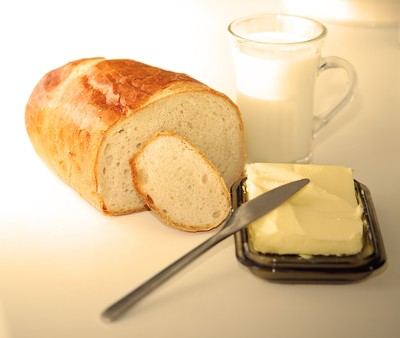

Tartine beurrée
Ingrédients
- du pain
- du beurre, de préférence salé
Ustensiles
- un réfrigérateur
- un couteau à pain
- un couteau à beurre
- une table
- une assiette
- éventuellement un grille pain
Instructions
- Prendre le pain et couper une tartine avec le couteau à pain
- Pour plus de croustillant, il est possible de placer la tartine de pain au grille-pain
- Sortir le beurre du réfrigérateur.
- Prendre un morceau de beurre avec le couteau beurre
- Etaler le beurre sur le pain
- Déguster
Image : Designed by Bedneyimages / Freepik
